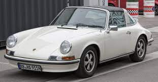

2. Ferdinand Porsche Designed The Worlds First Hybrid Vehicle All the way back in 1899, Ferdinand Porsche designed the Lohner-Porsche. It was an electric-driven vehicle with a gasoline engine generator to power the batteries. It never made it fully into production due to the heavy weight and high cost, but it is incredible to look back and see what engineers like Porsche could accomplish well over 100 years ago.
3. Porsche bodies were once made by Recaro. Now commonly known for making some of the best seats in the business, Recaro used to be a company named Reutter Carrosserie Werke. They specialised in making car bodies and interiors, and was contracted by Porsche to make the bodies for the Porsche 356. By the 1960s, Porsche had purchased the body making portion of Reutter Carrosserie Werke, and the interior manufacturing portion was renamed to “Recaro.”